Kibana Guide: Proportion and Distribution Charts
|
This content was generated with the assistance of AI and should be verified against the official documentation before being relied on in production. |
Checked on 2026-11-11 against Kibana 9.5.x.
What you build
You add two panels to the dashboard Bookshelf (guides): a donut that shows what share of the Bookshelf log records each URI has, and a heat map that shows how busy each URI is over time. On the way you draw the same data as a pie, a treemap, a waffle, a mosaic and a tag cloud in the Lens editor, so that you see what each chart is good at and when it is the wrong choice.
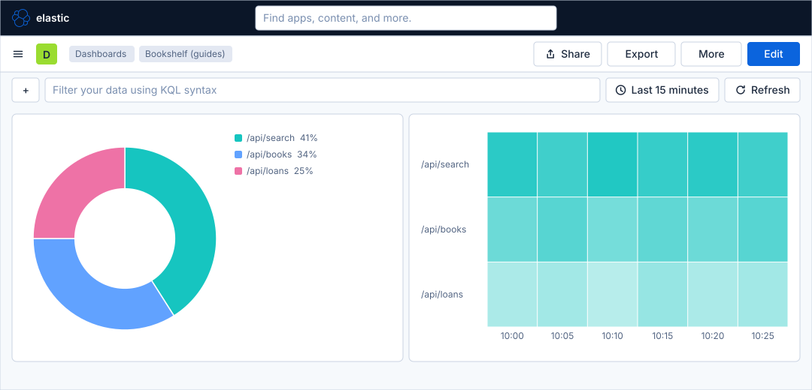
Before you start
-
Start the Kibana profile of the hands-on lab and wait about a minute:
cd lab docker compose --profile kibana up -d -
Open http://localhost:5601 and sign in as
elasticwith the passwordlab-elastic-password. When Kibana opens its full-screen welcome page, click Explore on my own. -
Do the guide Create a dashboard and the first Lens panel, which creates the dashboard Bookshelf (guides) and shows the maps of the Lens editor and of a dashboard in edit mode. Do the guides on time series charts and on metric, gauge and table too if you want the dashboard to carry their panels; this guide does not need them. It needs the data view Bookshelf logs (guides), with the index pattern
logs-generic.otel-defaultand the time field@timestamp. -
The load generator sends traffic to the Bookshelf service in its default mode, which fills the log data stream. Lens needs no licence beyond the basic one; the lab runs a trial licence anyway.
-
The guide was checked on Elasticsearch and Kibana 9.5.6. The figures are drawings of the Kibana 9.5 user interface, not screenshots, so small details can differ from your screen; the chart type list and the names of the drop zones of the partition charts and of the heat map are drawn from the Elastic documentation. A highlighted box with a number marks the control of the step with the same number.
Steps
The guide works in the Lens editor and on a dashboard in edit mode. The screen maps of both are in the first dashboard guide; come back to them when a control is not where a figure shows it. Whenever Lens leaves a dimension empty after you change the chart type, drag the field onto the dashed button again: the types keep what they can and ask for the rest.
Open the dashboard in edit mode
-
Open Dashboards in the primary navigation and click Bookshelf (guides).
-
Click Edit in the second bar.
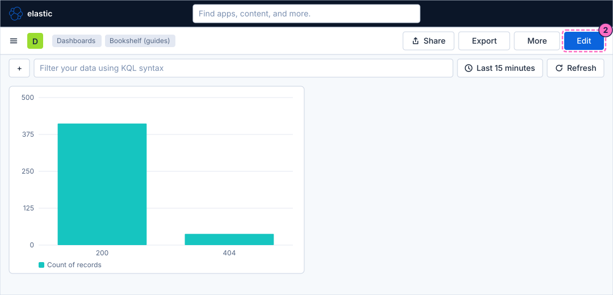
-
Click Add in the second bar. The Add to dashboard flyout opens.
-
In the flyout, click Visualization ("Build charts, metrics, and tables with a point-and-click editor."). Visualization (query) is the ES|QL editor of the next guide.
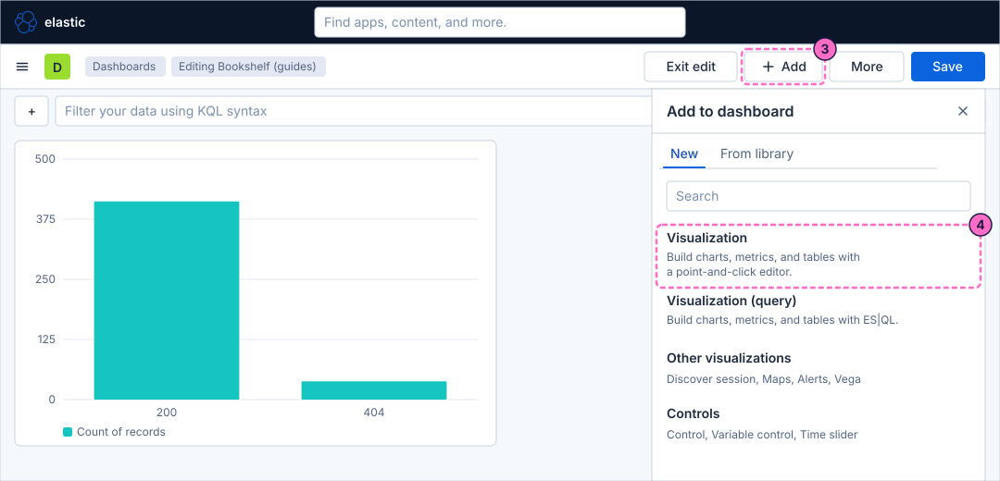
Build a pie and a donut
-
Lens opens. Check that the Data view picker shows Bookshelf logs (guides). Open the chart type list with the button of the layer card, which shows Bar, and choose Pie.
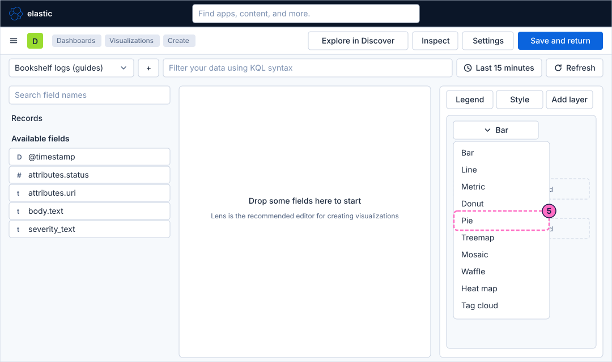
-
In Search field names, type
uri. Drag the fieldattributes.urionto the dashed Slice by button, so that each URI becomes one slice. -
Drag the entry Records, above Available fields, onto the dashed Metric button. Lens shows it as Count of records and draws the pie.
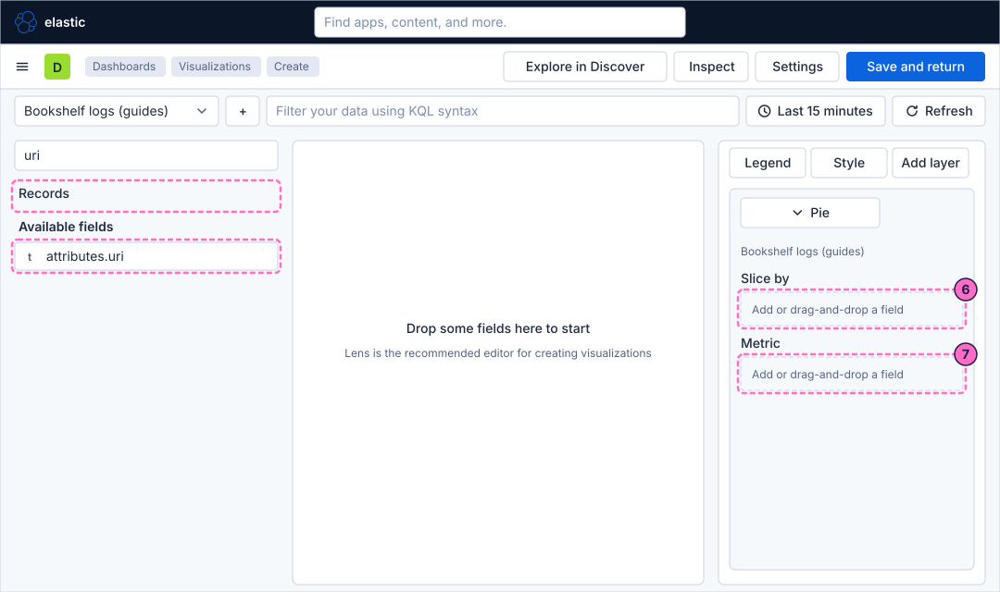
-
Open the chart type list again and choose Donut. The slices keep their data and the centre of the chart opens. Pie and donut show the same numbers; the donut leaves room for a total in its hole and is easier to read next to other panels.
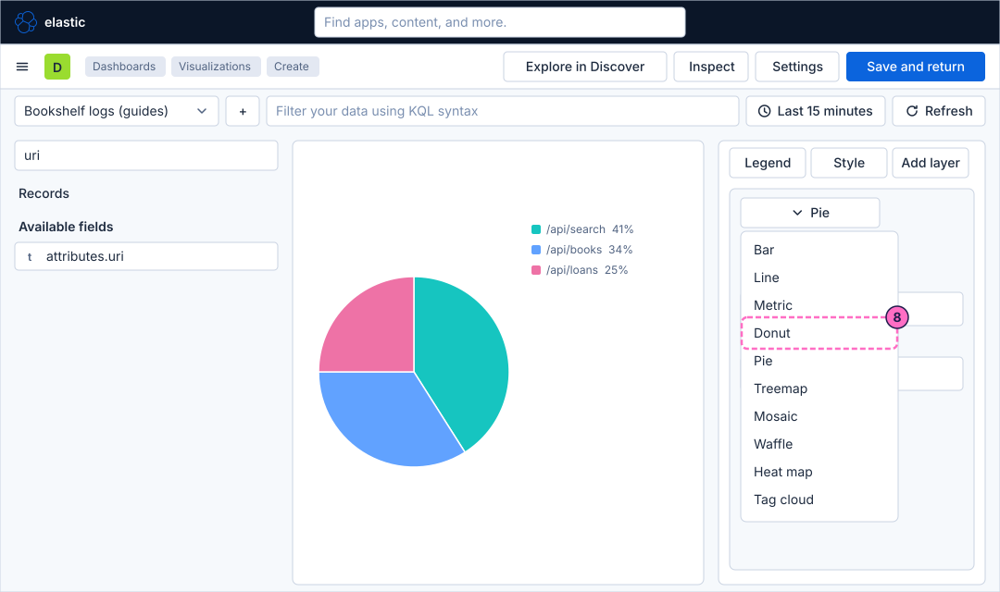
-
Click Save and return. The dashboard is back in edit mode with the donut as a new panel.
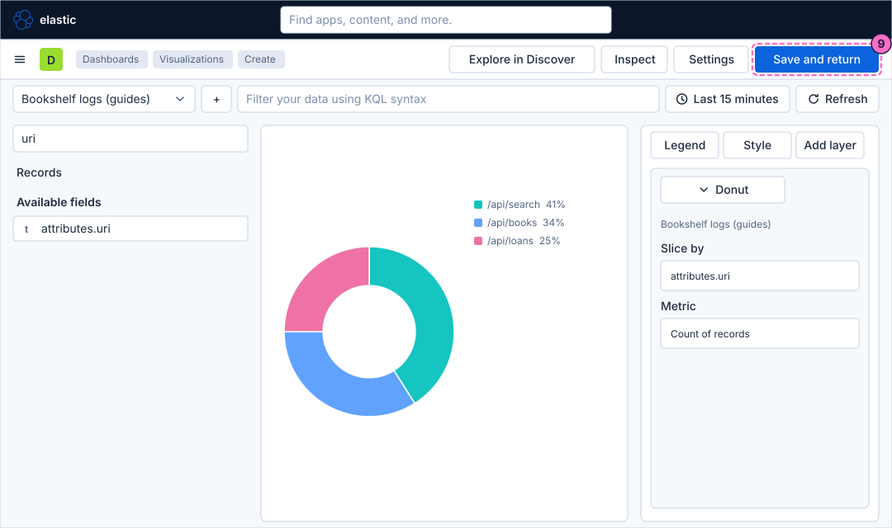
Try a treemap, a waffle, a mosaic and a tag cloud
-
Click Add and then Visualization again, as in steps 3 and 4. A new Lens editor opens with an empty workspace.
-
Open the chart type list and choose Treemap.
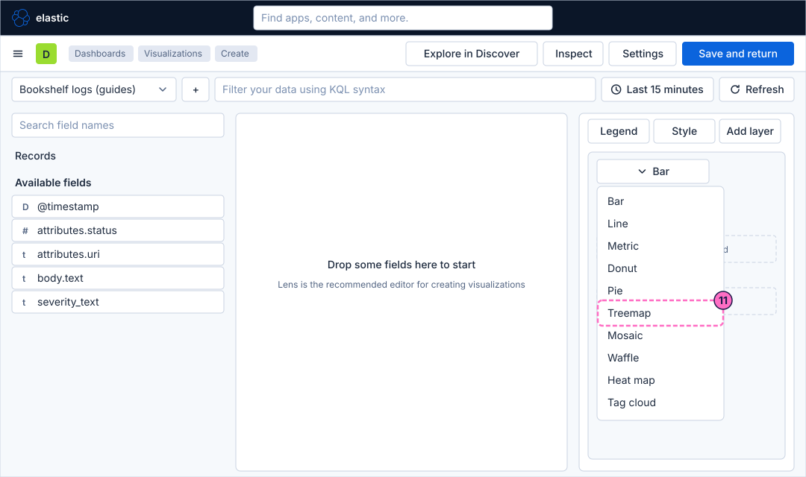
-
Drag the field
attributes.urionto the dashed Slice by button. -
Drag the field
attributes.statusonto the second dashed Slice by button, which appears once the first one is filled. Each URI tile is now split by status, so a small tile for404sits inside the tile of every URI. -
Drag Records onto the dashed Metric button. The treemap draws one tile per URI, sized by the count, and splits it by status.
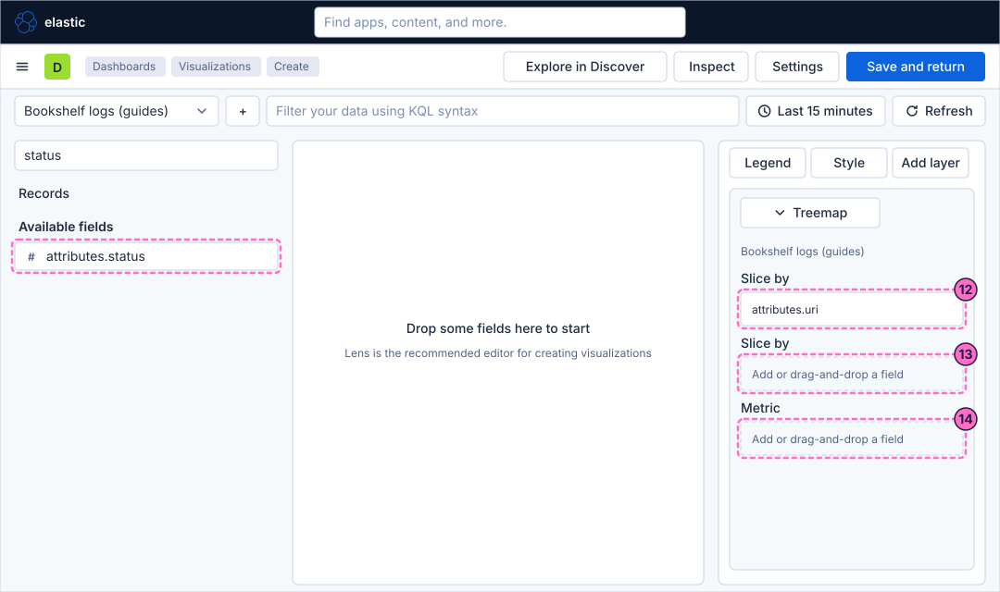
-
Open the chart type list and choose Waffle. A waffle draws 100 squares and colours as many as each value’s percentage, which makes a share such as 12 per cent of status
404easy to count. -
Open the list again and choose Mosaic. A mosaic draws one column per value of the first dimension, as wide as its share, and stacks the second dimension inside it, so it shows two proportions at once.
-
Open the list again and choose Tag cloud. A tag cloud writes each value of the first dimension as a word sized by the metric. It is decorative: the sizes cannot be read as numbers.
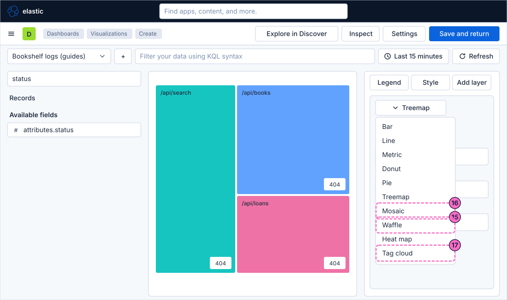
Build a heat map and save it
-
Open the chart type list and choose Heat map.
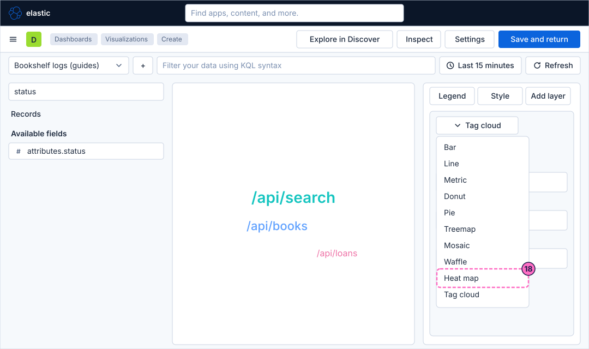
-
Drag the field
@timestamponto the dashed Horizontal axis button, so that time runs from left to right. -
Drag the field
attributes.urionto the dashed Vertical axis button, so that each URI is one row. The cell value is the count of records; if the cell value button is empty, drag Records onto it.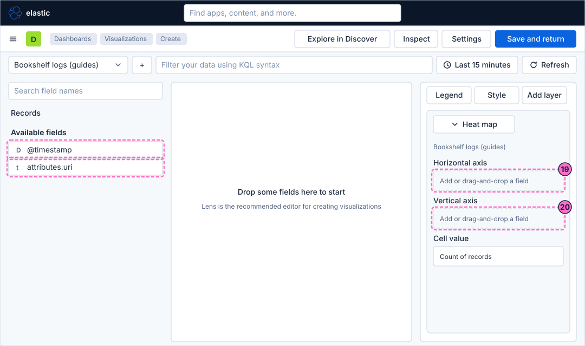
-
Each cell is now one time bucket of one URI, and darker cells have more records. Click Save and return.
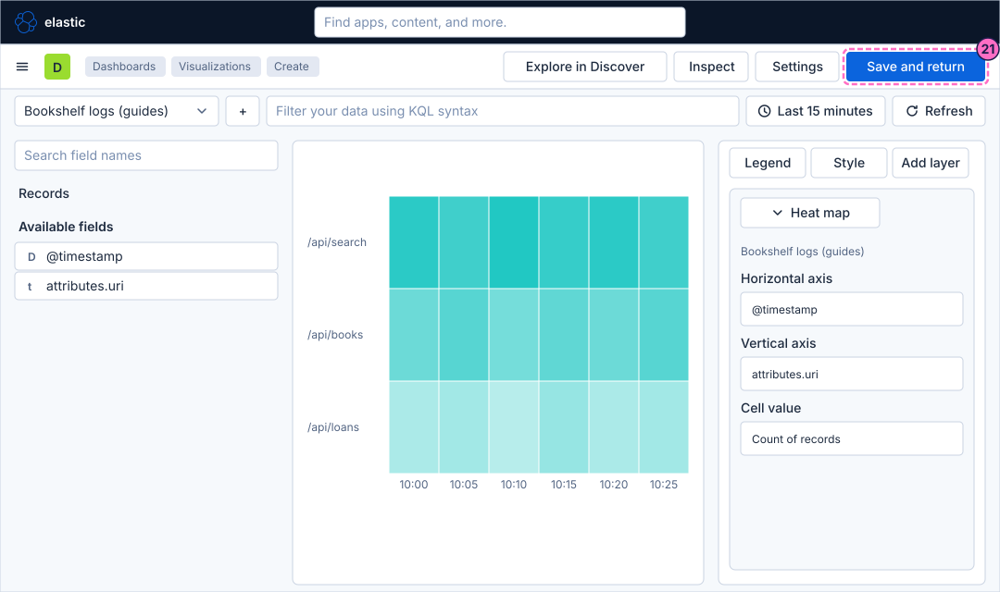
Check the result
Open Dashboards and then Bookshelf (guides). The dashboard must show the donut with one slice per URI and the heat map with one row per URI and one column per time bucket. The shares in the figures are examples; the numbers on your screen depend on how long the lab has been running.
Change the traffic and press Refresh to see the panels react:
curl -X POST localhost:8090/mode/failingWithin about a minute the counts per URI move, because the load generator writes error lines in this mode. Restore normal traffic afterwards:
curl -X POST localhost:8090/mode/normalVariations
-
Break the donut down by
attributes.statusinstead ofattributes.urito see the share of200and404, and compare it with the waffle. -
Add
severity_textas a second slice dimension of the treemap to see the share ofINFOandERRORlines per URI. -
Change the heat map to
attributes.statuson the vertical axis to see when the404lines cluster in time.
When each chart is the wrong choice:
| Chart | Wrong when | Use instead |
|---|---|---|
Pie and donut |
There are more than about five slices, the slices are close in size, or you want to follow the values over time. |
A bar chart sorted by size, or a table. |
Treemap |
You need exact values, or the tiles are very unequal: the small ones become unreadable. |
A table with a bar next to the number, or a bar chart. |
Waffle |
There are many categories, or the shares are tiny: a value below 1 per cent has no square. |
A metric with a percentage, or a bar chart. |
Mosaic |
Readers are not used to it, or one of the two dimensions has many values. |
Two donuts, or a stacked bar chart. |
Heat map |
You need the exact number of a cell, or the colour range is not fixed, so that two heat maps cannot be compared. |
A table, or a line chart with a few series. |
Tag cloud |
The values must be compared or ranked. |
A table sorted by the count. |
What can go wrong
| Symptom | Cause | Fix |
|---|---|---|
The chart type list does not show Waffle or Tag cloud in the place of the figure |
The list is grouped or ordered differently in your Kibana version. |
Look for the name in the whole list; the names are the ones of the Elastic documentation. |
The chart is empty after you change the chart type |
Lens could not carry a dimension over to the new type. |
Drag the field onto the dashed button of the new type again. |
A slice named Other appears |
Lens shows the top values of the field only and folds the rest into Other. |
Open the dimension and raise the number of values, or accept the grouping. |
The heat map has one single colour |
All cells have nearly the same count, or the time range is too short to make buckets. |
Widen the time picker, for example to Last 1 hour. |
The workspace says that no results were found |
The time picker covers Last 15 minutes and the load generator or the Bookshelf service is stopped. |
Check the mode with |
Clean up
Keep the dashboard: the following guides extend it. To remove it with everything else the lab stores, stop the
profile with docker compose --profile kibana down -v, which also deletes the volumes and therefore the dashboard.
Where to go next
-
Previous guide: Metric, gauge and table.
-
Next guide: ES|QL panels and variable controls, which builds charts from a query and makes them interactive.
-
Reference: Lens lists every chart type with its dimensions and when to use it, and Building Dashboards explains edit mode and panels.